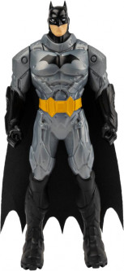

A superhero is a person who does heroic deeds and has the ability to do them in a way that a normal person couldn’t. So in order to be a superhero, you need a power that is more exceptional than any power a normal human being could possess, and you need to use that power to accomplish good deeds. Otherwise, a policeman or a fireman could be considered a superhero. For instance, a good guy fighting a bad guy could be just a regular police story or detective story or human-interest story. But if it’s a good guy with a superpower who is fighting a bad guy, it becomes a superhero story. If the good guy is doing something that a normal human being couldn’t do, couldn’t accomplish, then I assume he becomes a superhero.
Article on superheroes at OUT blog

Batman
After witnessing the brutal murder of his parents, billionaire Bruce Wayne dedicated himself to purging Gotham City of evil. Spending years training his mind and body to perfection, he declared war on all cime in Gotham and became the Dark Knight, Batman.
Anchor to "What makes a superhero?"